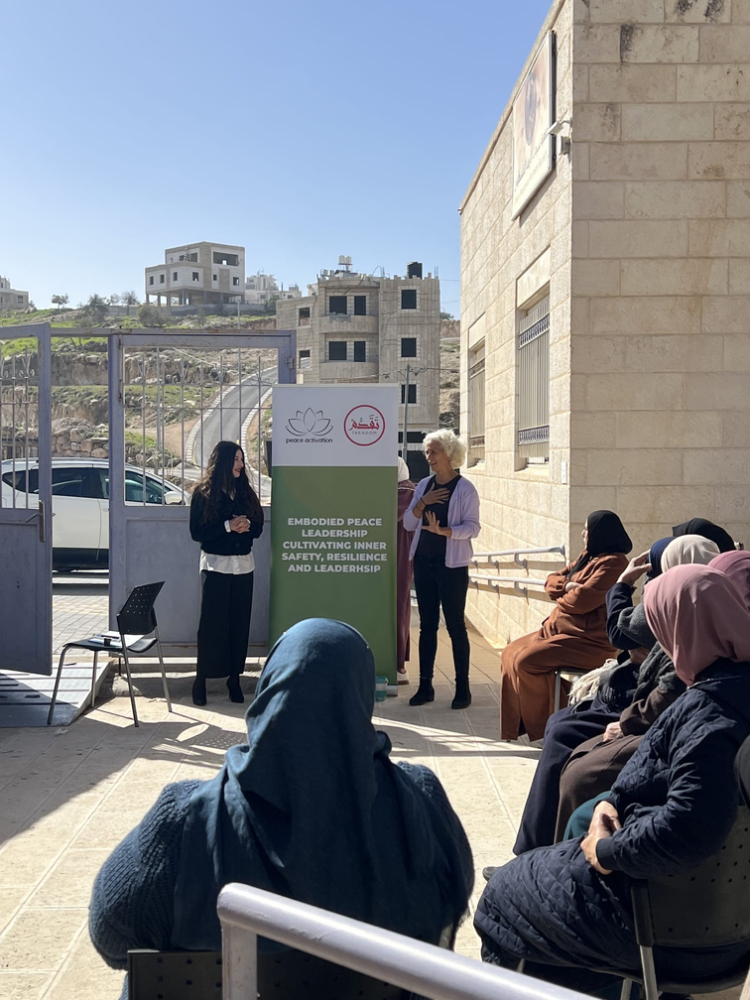
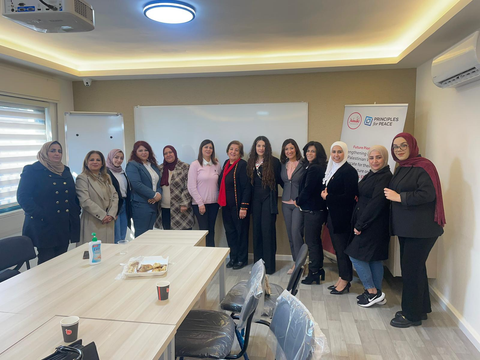
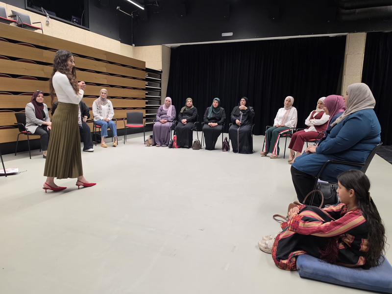
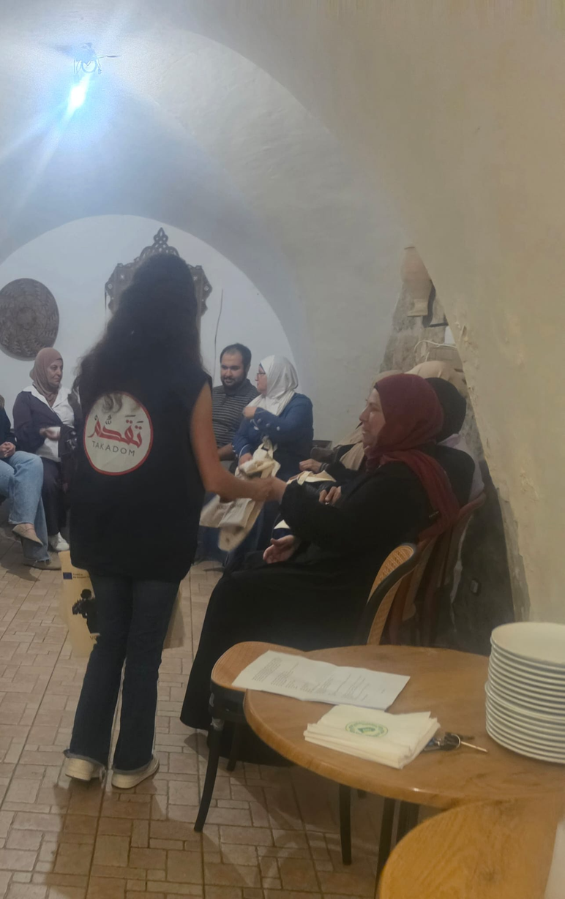
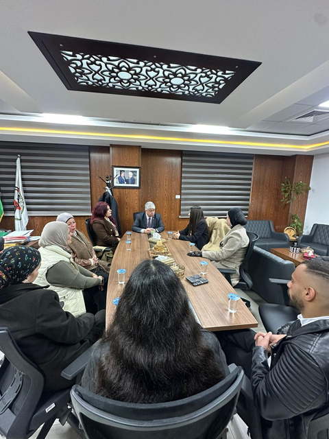
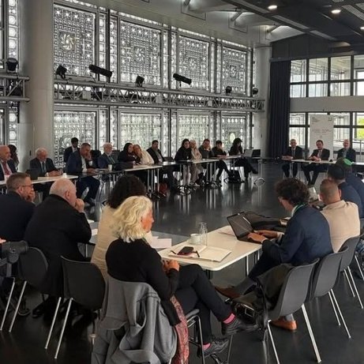
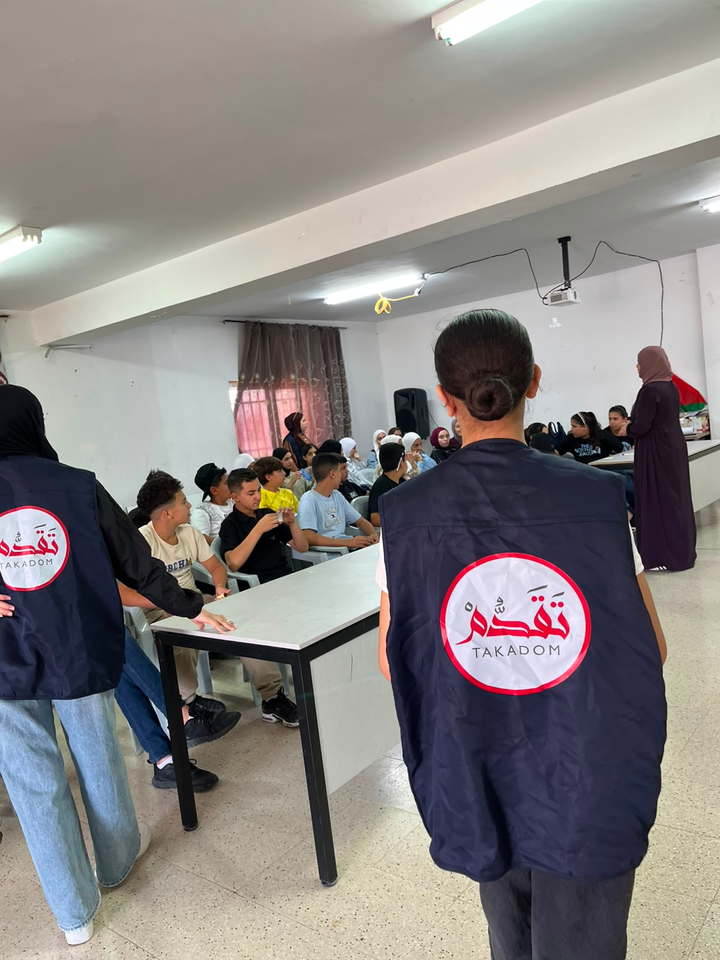
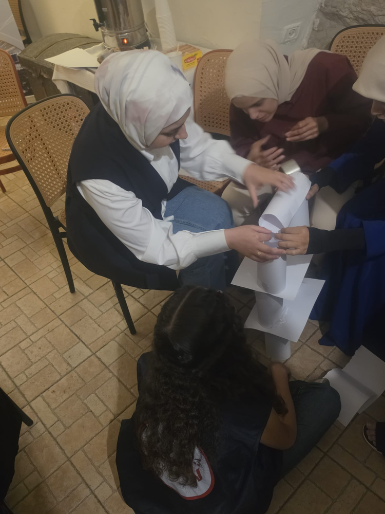

Empower People
Leadership, voice, confidence and opportunity.
Takadom for Peace empowers Palestinian women and youth to lead change, strengthen their communities, and contribute to a more inclusive, resilient, and peaceful future.

We believe in building a just and comprehensive peace by empowering Palestinian youth and women through leadership, dialogue, advocacy, resilience-building and community action.
Learn more about Takadom →Leadership, voice, confidence and opportunity.
Resilience, inclusion and connected communities.
Dialogue, participation, cooperation and action.

Leadership, public speaking, negotiation, advocacy and inclusive participation for Palestinian women and youth leaders.

Personal development, emotional awareness, leadership and community action for women.

Storytelling, resilience, creative expression and meaningful civic engagement for young people.
Explore Program →
Leadership, negotiation, advocacy, mentorship and networking.
Read Story →
Taking Palestinian voices to a global platform.
Read Story →
Leadership, civic participation and democratic representation.
Read Story →
From reflection and storytelling toward agency and action.
Read Story →Takadom for Peace is a member of these networks and initiatives:
Whether you are a donor, partner, civil society organization, researcher, volunteer or fellow changemaker, there are many ways to support our work.
“A more peaceful future is possible when people work together.”